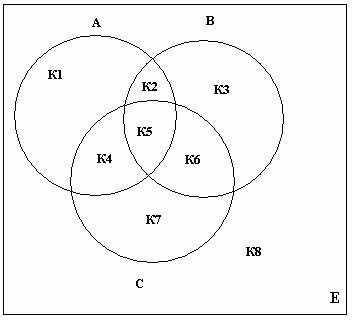
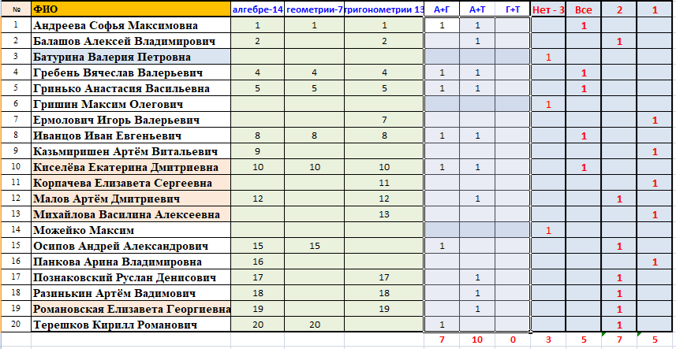

Примечание: Гласные буквы - а,е,и,о,у,ы,э,ю,я (ё обычно не входит в литерный тип); согласные - все остальные буквы, кроме ь, ъ; звонкие согласные - б,в,г,д,ж,з,й,л,м,н,р; глухие согласные - к,п,с,т,ф,х,ц,ч,ш,щ.
“ ”
– принадлежит;
”
– принадлежит;
“=>“ – следовательно;
“ø” – пустое множество, т.е. не содержащее ни одного
элемента.
“
∩“ – знак пересечения.
- m (К5) = m (А∩В∩С)= m (АВС) - m (А) - m (В) - m (С) + m (А∩В) + m (А∩С) + m (В∩С)
- m (К5) = 37-20-18-18+7+8+9=5
- m (К2) = m (А∩В) - m (К5) = 7-5=2
- m (К4) = m (А∩С) - m (К5) = 8-5=3
- m (К6) = m (В∩С) - m (К5) = 9-5=4
- m (К1) = m (А) - m (К2) - m (К4) - m (К5) = 20-2-3-5=10
- m (К3) = m (В) - m (К2) - m (К6) - m (К5) = 18-2-4-5=7
- m (К7) = m (С) - m (К4) - m (К6) - m (К5) = 18-3-4-5 =6
- m (К2) + m (К4) + m (К6) = 2+3+4=9 – число учеников решивших только две задачи;
- m (К1) + m (К3) + m (К7) = 10+7+6=23 – число учеников решивших только одну задачу.
- 1. Известны сорта роз, выращиваемых тремя цветоводами: «Анжелика», «Виктория», «Гагарин», «Ауе Магiа», «Катарина», «Юбилейная». Определить те сорта, которые имеются у каждого из цветоводов, которые есть хотя бы у одного из цветоводов, которых нет ни у одного из цветоводов.
- Заданы имена девочек. Определить, какие из этих имен встречаются во всех классах данной параллели, которые есть только в некоторых классах и какие из этих имен не встречаются ни в одном классе.
- Задан некоторый набор товаров. Определить для каждого из товаров, какие из них имеются в каждом из п магазинов, какие товары есть хотя бы в одном магазине и каких товаров нет ни в одном магазине.
- Имеется множество, содержащее натуральные числа из некоторого диапазона. Сформировать два множества, первое из которых содержит все простые числа из данного множества, а второе — все составные.
- В озере водится несколько видов рыб. Три рыбака поймали рыб, представляющих некоторые из имеющихся видов. Определить: какие виды рыб есть у каждого рыбака; • какие рыбы есть в озере, но нет ни у одного из рыбаков.
- Есть список игрушек, некоторые из которых имеются в Н детских садах. Определить игрушки из списка: • которых нет ни в одном из детсадов; • которые есть в каждом из детсадов.
- Задано некоторое множество М и множество Т того же типа. Подсчитать, сколько элементов из множеств Т и М совпадает.
- Из диапазона целых чисел т ... п выделить:
1) множество чисел, делящихся без остатка или на 2, или на 3
2) множество чисел, делящихся на 11 без остатка. - Дан текст из цифр и строчных латинских буки, за которыми следует точка. Определить, каких букв — гласных или согласных больше в этом тексте.
- Подсчитать количество различных цифр в десятичной записи числа.
- Напечатать в возрастающем порядке все цифры, не входящие в запись данного натурального числа.
- Дан текст из строчных латинских букв, за которыми следует точка. Напечатать все буквы, входящие в текст не менее двух раз.
- Дан текст из строчных латинских буки, за которыми следует точка. Напечатать все буквы, входящие в текст по одному разу.
- Дан текст из строчных латинских букв, за
которым следует точка. Напечатать:
- первые вхождения букв в текст, сохраняя их взаимный исходный порядок;
- все буквы, входящие в текст не менее двух раз;
- все буквы, входящие в текст по одному разу.
Дана непустая последовательность слов из строчных русских букв; между соседними словами - запятая, за последним словом - точка. Напечатать в алфавитном порядке: - все гласные буквы, которые входят в каждое слово; все согласные буквы, которые не входят ни в одно слово;
- все звонкие согласные буквы, которые входят хотя бы в одно слово; все глухие согласные буквы, которые не входят хотя бы в одно слово;
- все согласные буквы, которые входят только в одно слово; все глухие согласные буквы, которые не входят только в одно слово;
- все звонкие согласные буквы, которые входят более чем в одно слово; все гласные буквы, которые не входят более чем в одно слово;
- все звонкие согласные буквы, которые входят в каждое нечетное слово и не входят ни в одно четное слово; все глухие согласные буквы, которые входят в каждое нечетное слово и не входят хотя бы в одно четное слово.
- Имеются три множества символьного типа,
которые заданы своими конструкторами:
Y1=['A','B','D','R','H']
Y2=['R','A','H','D']
Y3=['A','R'].
Сформировать новое множество .
Предусмотреть формирование исходных множеств с клавиатуры. - Подсчитать общее количество цифр и знаков '+', '-', и '*', входящих в строку s.
- Подсчитать количество различных (значащих) цифр в десятичной записи натурального числа n и напечатать в возрастающем порядке все цифры, не входящие в десятичную запись натурального числа n.
-
В олимпиаде по математике для абитуриентов приняло участие
20 учащихся, им было предложено решить одну задачу по алгебре, одну по геометрии и одну по тригонометрии. По алгебре решили задачу
14 человек, по геометрии – 7 человек, по тригонометрии –
13 человек.
По алгебре и геометрии решили 8 человек, по алгебре и тригонометрии – 9 человек. Ни одной задачи не решили 3 человека.
- Сколько учащихся решили все задачи?
- Сколько учащихся решили только две задачи?
- Сколько учащихся решили только одну задачу?
-

- В каждом из 3- х магазинов может быть множество продуктов: хлеб, горох, лапша, масло молоко, соль, перец, сахар, мука., крупа.. (Ввести с клавиатуры) Ввести статически множество из продуктов, имеющихся в каждом из магазинов. Построить множество А, содержащее название продуктов, которых нет ни в одном магазине, в магазинах 1 и 2, в магазинах 1 и 3, в магазинах 2 и 3.
- В вузе изучается множество предметов физика, математика, история, биология. Ввести с клавиатуры множество названий предметов, которые нравятся каждому из ваших 3-х однокурсников. Построить множество А, содержащее название предметов, которые нравятся. всем 3-м однокурсникам
- Имеется множество имен: Лиза, Лена, Галя, Валя. Ввести с клавиатуры множество имен, которые нравятся 5-ым вашим друзьям. Построить множество А, содержащее имена, которые не нравятся никому из друзей.
-
В каждом из 3-х вузов может изучаться множество языков программирования: basic, pascal, prolog, clipper, cu, logo. Ввести с клавиатуры множество языков, изучаемых в каждом из вузов. (Для теста ввести явно в коде программы) Построить множество В, содержащее названия языков, изучаемых только в одном из 3-х вузов.
-
В каждом из трех магазинов может быть множество продуктов: хлеб, молоко, масло, сыр, колбаса. Ввести с клавиатуры множество продуктов, имеющихся в каждом из магазинов. Построить множество А, содержащее названия продуктов, имеющихся хотя бы в одном из магазинов.
-
Вывести на экран нечетные элементы числового множества, которое является объединением двух других множеств.
-
Вывести на экран кратные трем элементы числового множества, которое является разностью двух других множеств.
-
Вывести на экран нечетные элементы числового множества, которое является пересечением двух других множеств.
-
Вывести на экран кратные пяти элементы числового множества, которое является объединением двух других множеств.
-
Вывести на экран нечетные элементы числового множества, которое является разностью двух других множеств.
-
Подсчитать количество нечетных элементов во множестве, которое является пересечением двух других множеств.
-
Подсчитать количество четных элементов во множестве, которое является объединением двух других множеств.
-
Подсчитать количество кратные трем элементов числового множества, которое является разностью двух других множеств.
-
Подсчитать количество четных элементов во множестве, которое является пересечением двух других множеств.
-
Определить количество кратных пяти элементов числового множества, которое является объединением двух других множеств.
-
Вывести на экран количество нечетных элементов числового множества, которое является разностью двух других множеств.
Вывести на экран четные
элементы числового множества, которое является
пересечением двух других множеств.